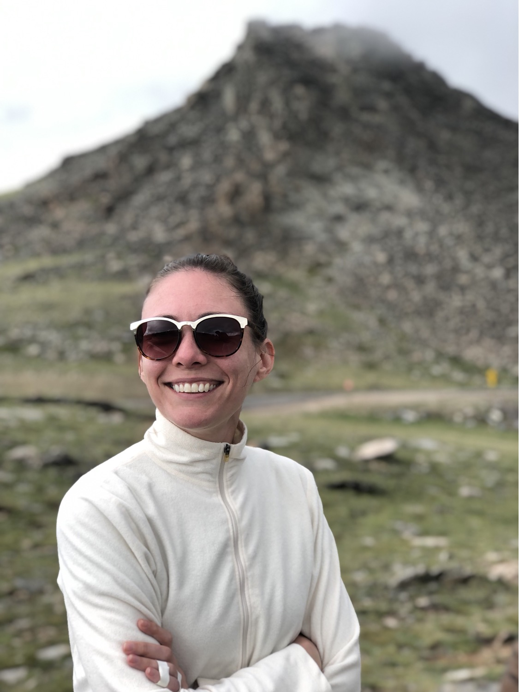
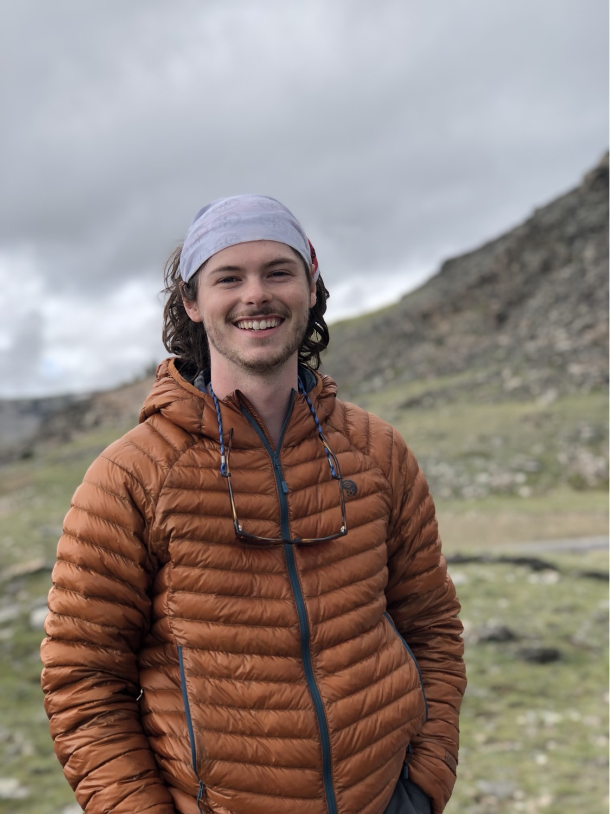
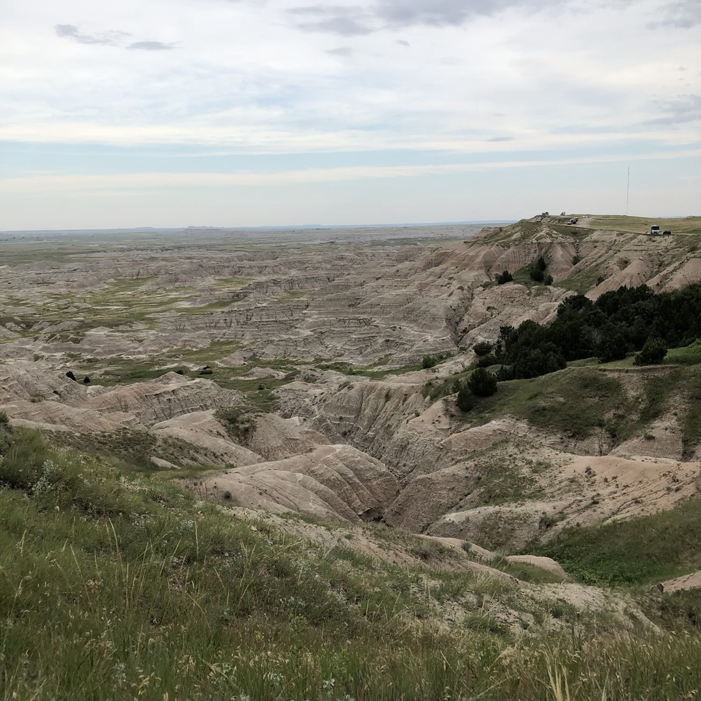
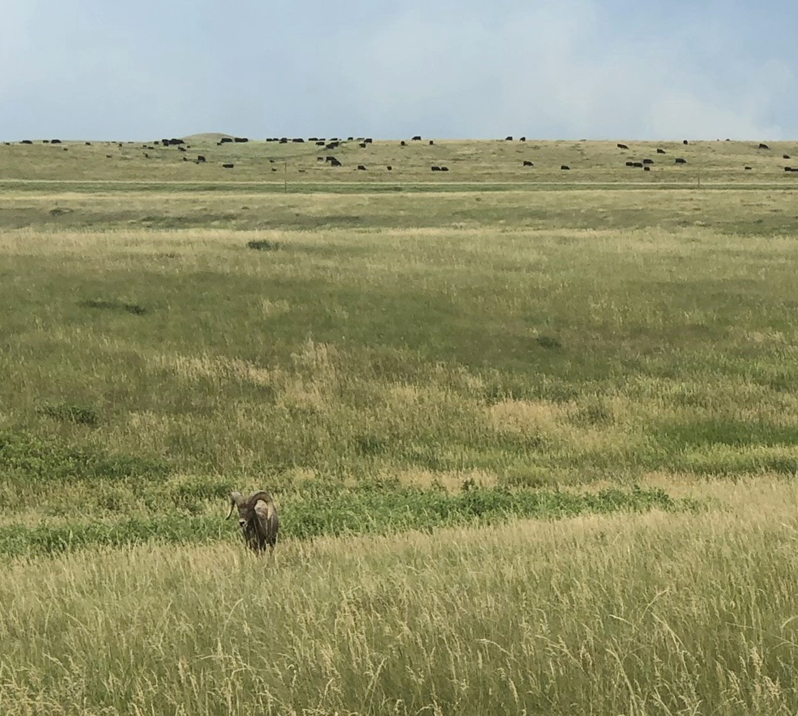
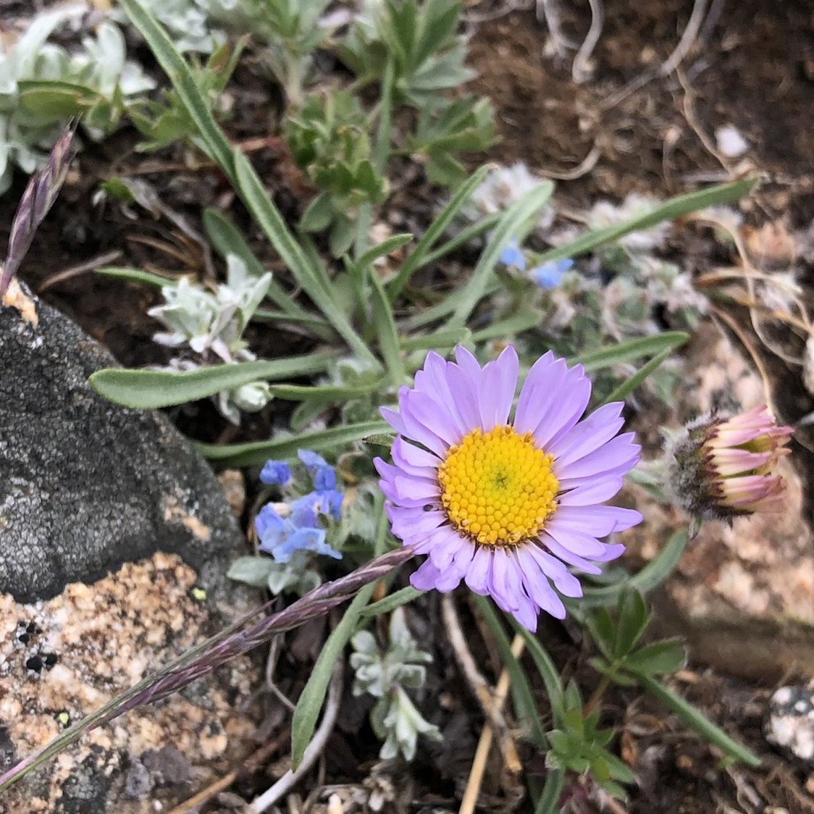
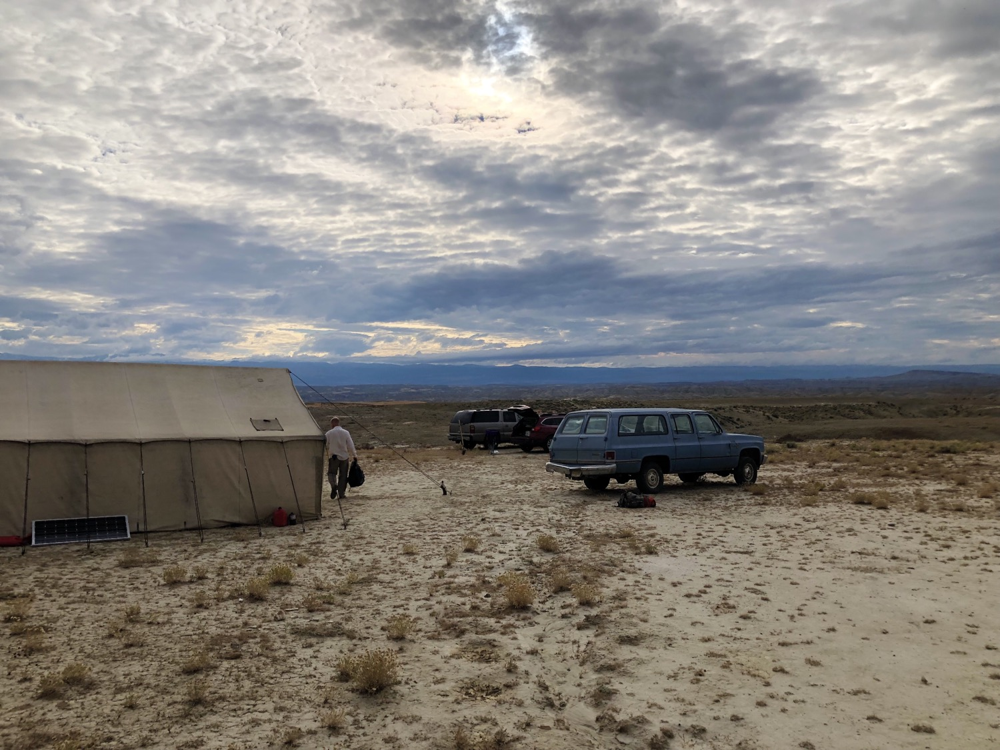

2021 Dispatch from the field #1
I started collecting plant fossils in the Bighorn Basin in 2009, but this was my first summer back collecting since I started at William Jewell College. We began as a team of three: me, my wife Sarah, and Ben Zahnd. Sarah is by now an experienced collector, and Ben is a senior biology major at Jewell.


The drive from Kansas City takes two days. We made it to Wall, SD, on the first night and set up camp outside of town, where dispersed camping is permitted. The site had a beautiful view overlooking the badlands of the White River Group, near Badlands National Park. As we ate dinner and worried about the threat of storms from the west, we watched a dramatic moonrise over the badlands to the east. Although it was a windy night, we were fortunate that most of the rain passed south of us.


We woke up to cows mooing in the distance just before dawn. Ben made coffee, and we were on our way by about 6:30. The second half of the trip took us around the Black Hills, across the Powder River Basin, and over the Bighorn Mountains. We took our time, with several stops to stretch and caffeinate as needed. I drove to the area where Fossil Cycad National Monument was once located, but the area is all private land, so there was nothing left to see. We drove to Devils Tower, but the roads and parking lot near the base were full, so we admired it from afar.
We crossed the Bighorn Mountains on Highway 16, where we took in the fantastic views and alpine flowers at Powder River Pass and down Ten Sleep Canyon.

We made it to camp around 6. Home for the week. As we took in the evening view of the mountains and decided where to pitch our tents, our colleagues from the University of Florida returned to camp from a successful day of collecting. After introductions and dinner, we headed to bed, glad to be done with all that driving.
